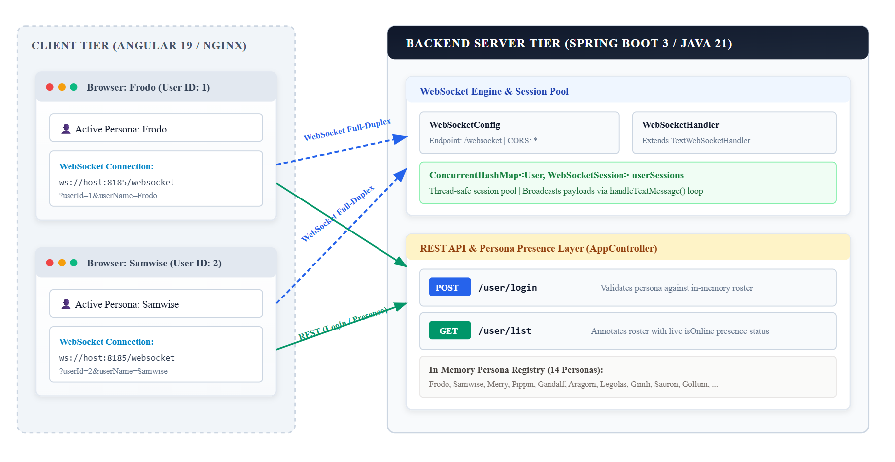

WebSocket Real-Time Chat Platform
A low-latency, bidirectional multi-client chat application implemetned with a Spring Boot 3 (Java 21) backend, an Angular 19 single-page web application, and full Docker Compose container orchestration.
The system demonstrates WebSocket lifecycle management, thread-safe concurrent session pooling, dynamic hostname resolution for containerized and LAN environments, and real-time active user presence tracking.
Demo
Following video demonstrats two browser sessions (Frodo and Samwise) authenticating and exchanging real-time chat messages bidirectionally:
Bidirectional real-time chat between authenticated personas
System Architecture
The following diagram illustrates the complete topology, communication protocols, and runtime interaction between the client applications, Docker network, and the backend WebSocket engine:

Backend Architecture (Spring Boot 3 & WebSockets)
The backend is built with Spring Boot 3 and Java 21.
1. WebSocket Protocol Configuration
The WebSocket configuration registers the /websocket endpoint and enables cross-origin requests from any frontend origin (setAllowedOrigins("*")):
package com.chat.config;
import com.chat.websocket.WebSocketHandler;
import org.springframework.beans.factory.annotation.Autowired;
import org.springframework.context.annotation.Configuration;
import org.springframework.web.socket.config.annotation.EnableWebSocket;
import org.springframework.web.socket.config.annotation.WebSocketConfigurer;
import org.springframework.web.socket.config.annotation.WebSocketHandlerRegistry;
@Configuration
@EnableWebSocket
public class WebSocketConfig implements WebSocketConfigurer {
@Autowired
private WebSocketHandler webSocketHandler;
@Override
public void registerWebSocketHandlers(WebSocketHandlerRegistry registry) {
registry.addHandler(webSocketHandler, "/websocket")
.setAllowedOrigins("*");
}
}
2. Thread-Safe WebSocket Handler & Session Pooling
Spring's TextWebSocketHandler manages WebSocket lifecycles. Sessions are indexed in a ConcurrentHashMap<User, WebSocketSession>:
- Handshake User Extraction: When a client establishes a connection (
ws://host:8185/websocket?userId=1&userName=Frodo),getUserFromSession()parses the query parameters fromsession.getUri(). - Session Registration:
afterConnectionEstablishedregisters the new session in the concurrent map and logs active session metrics. - Broadcast Engine: When any user transmits a
TextMessage,handleTextMessage()iterates across all registered sessions inuserSessions.values()and broadcasts the message in real time. - Graceful Cleanup:
afterConnectionClosedautomatically dereferences the user from the pool upon socket disconnection or network dropouts.
3. REST API & Dynamic Presence Aggregation
AppController provides two core REST endpoints:
POST /user/login: Authenticates a user by matching their chosen persona name against an in-memory registry of 14 personas (Frodo, Samwise, Gandalf, Aragorn, Legolas, Gimli, Gollum, Sauron, etc.). Returns200 OKwith user details or401 UNAUTHORIZED.GET /user/list: Returns the full user roster where each user'sisOnlineboolean is dynamically resolved by queryingwebSocketHandler.getOnlineUsers().
@CrossOrigin
@RestController
public class AppController {
@Autowired
private WebSocketHandler webSocketHandler;
@RequestMapping(value = "/user/login", method = RequestMethod.POST)
public User userLogin(@RequestBody LoginRequest loginRequest, HttpServletResponse response) {
return getValidUsers().stream()
.filter(u -> u.getUserName().equalsIgnoreCase(loginRequest.getName()))
.findFirst()
.orElseGet(() -> {
response.setStatus(HttpServletResponse.SC_UNAUTHORIZED);
return null;
});
}
@RequestMapping(value = "/user/list", method = RequestMethod.GET)
public List<User> listUsers() {
List<User> validUsers = getValidUsers();
Set<User> onlineUsers = webSocketHandler.getOnlineUsers();
validUsers.forEach(validUser -> validUser.setOnline(onlineUsers.contains(validUser)));
return validUsers;
}
}
Web Frontend Architecture (Angular 19)
The web frontend (chat-ui/) is developed with Angular 19 and structured with modular services and components.
1. Dynamic Host Resolution
To ensure seamless deployment across localhost, custom Docker bridge networks, and local area network (LAN) IP addresses, the application dynamically resolves the WebSocket connection target from the browser window's current host location:
// Dynamic WebSocket URI Resolution
const host = window.location.hostname;
const socketUrl = `ws://${host}:8185/websocket?userId=${currentUser.id}&userName=${currentUser.userName}`;
const socket = new WebSocket(socketUrl);
2. Frontend Capabilities
- Persona Authentication: Clean modal to pick and authenticate as any character from the Middle-earth user roster.
- Active Presence Sidebar: Real-time user roster featuring green active status pills indicating which users currently maintain an active WebSocket connection.
- Bidirectional Chat Room:
- Message bubble distinction (outgoing messages aligned right with accent color; incoming messages aligned left with neutral card styling).
- Formatted sender avatars and timestamps.
- Automatic scrolling upon receiving new broadcast payloads.
Containerization & Docker Orchestration
The app is fully containerized with multi-stage Docker builds and orchestrated using Docker Compose:
Multi-Stage Dockerfiles
| Service | Build Stage | Runtime Stage | Exposed Port |
|---|---|---|---|
websocket-chat-server |
Maven Wrapper + Java 21 SDK | Eclipse Temurin 21 JRE (alpine) |
8185:8185 |
websocket-chat-ui |
Node.js 20 (npm run build) |
Nginx 1.25 Alpine | 80:80 |
Docker Compose Configuration (docker-compose.yaml)
services:
websocket-chat-server:
build: ./server
ports:
- "8185:8185"
websocket-chat-ui:
build: ./chat-ui
ports:
- "80:80"
Getting Started & Local Development
Option A: One-Line Docker Compose (Recommended)
From the root directory:
docker compose up --build
- Access the web interface at
http://localhost - WebSocket server runs at
ws://localhost:8185/websocket
Option B: Local Development (Individual Services)
1. Start Backend Server
cd server
./mvnw spring-boot:run
2. Start Angular Frontend
cd chat-ui
npm install
npm start
Future Roadmap
While the current architecture provides a clean, low-latency foundation for real-time communication, the following enhancements presents the future evolution path:
1. Dedicated Mobile Phone Application
- Native Mobile Clients: Extending the chat platform with a native mobile client built to handle mobile lifecycle events (app suspend/resume, background state, and device rotation).
- Push Notification Integration: Incorporating Firebase Cloud Messaging (FCM) so users receive message alerts even when the WebSocket connection is idle or the app is closed.
2. Decoupled WebSocket Gateways & API Microservices
- Traffic Segregation for High Availability: Separating the persistent WebSocket connection layer from standard stateless HTTP REST traffic.
- Stateless REST Services: Isolating user authentication, persona discovery, and account services into independently auto-scaled stateless microservices behind an API Gateway (e.g., Spring Cloud Gateway / Nginx Ingress).
3. Distributed Message Broker for Multi-Node Fan-Out
- Cluster-Wide Broadcasting: Upgrading the single-instance in-memory
ConcurrentHashMapsession pool with a distributed message broker (such as RabbitMQ, Redis Pub/Sub, or Apache Kafka). - Multi-Instance Scalability: When User A (connected to WebSocket Node 1) sends a message, Node 1 publishes the event to the broker topic. The broker immediately fans out the payload to WebSocket Node 2, Node 3, and Node $N$, delivering messages to recipients connected to any server instance in the cluster.
4. Message Persistence & Cross-Session Retention
- Durable Message Storage: Introducing a persistent database layer (e.g., PostgreSQL for relational query integrity or MongoDB/Cassandra for high-write chat logging) combined with Redis for hot message caching.
- Session Rehydration & History Sync: Enabling users to retrieve historical conversation threads, paginate older messages on scroll, and maintain chat continuity when logging in from new devices or browser sessions.
- Delivery Status & Receipts: Tracking sent, delivered, and read receipts alongside unread message badges.
The complete open-source repository is available on GitHub:
github.com/jeetprksh/websocket-chat